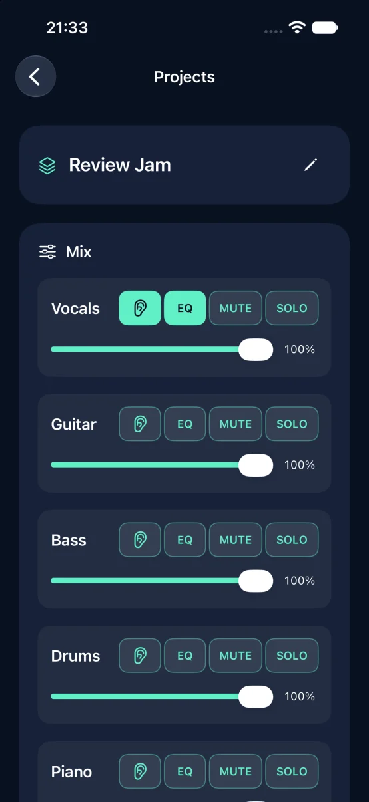
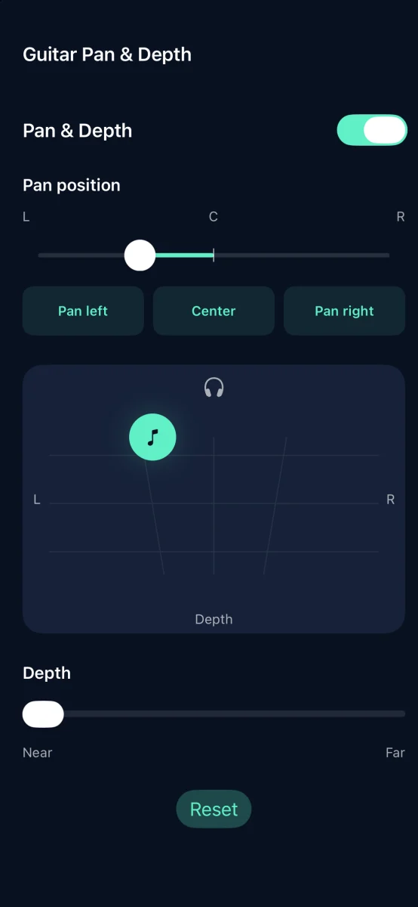
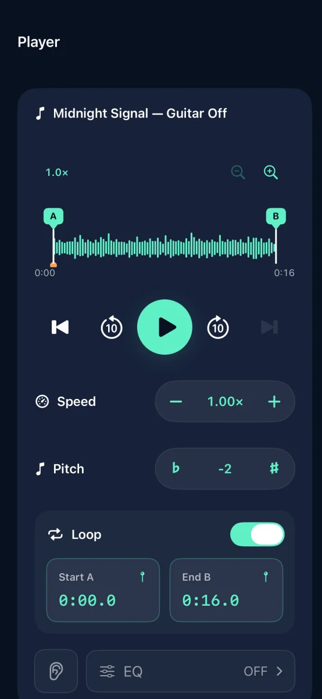

Stem separation and music practice for iPhone

Turn your songs into backing tracks
Split a song into six parts and mute the one you play.
Coming to the App Store

Features



Stem separation and music practice for iPhone
Separate a song into six parts on your iPhone: vocals, guitar, bass, drums, piano, and other instruments.
Adjust each part’s volume, mute, solo, 10-band EQ, pan, and depth to create a mix for practice. Adjust playback speed and pitch, and use A–B looping in Projects and Sessions.
Import audio from Files, eligible downloaded music from your music library, or the audio from a video selected in Photos. Streaming tracks and DRM-protected audio are not supported.
Export your mix as M4A, MP3, or WAV. For video projects, export the adjusted audio with the original video to Photos. Video exports retain the original playback speed.
Keep separated tracks in Projects for later editing. Save finished mixes in Sessions, adjust EQ and pan and depth for the whole mix, and move between tracks while you practice.
Try all features with three free successful separations. Each successful separation counts, including repeated separations of the same file. A one-time in-app purchase unlocks unlimited separations. There is no subscription. Existing projects and sessions remain available after the free allowance is used.
Audio separation runs on your device and does not require uploading your audio. No app account is required. Processing time and separation quality depend on your iPhone and the source audio. On iOS 26 or later, separation can continue while using another app or with the screen locked, but may be interrupted depending on device conditions. Keep the app open if background processing is unavailable.
Use audio and videos that you have the rights to import, modify, and share.
Requires iOS 18 or later. Supports 15 languages, including Japanese and English.
Support https://nakayamaworks.jp/self-session-maker/en/support.html Privacy Policy https://nakayamaworks.jp/self-session-maker/en/privacy.html Terms of Use https://nakayamaworks.jp/self-session-maker/en/terms.html Apple Standard EULA https://www.apple.com/legal/internet-services/itunes/dev/stdeula/
Help & Support ↗